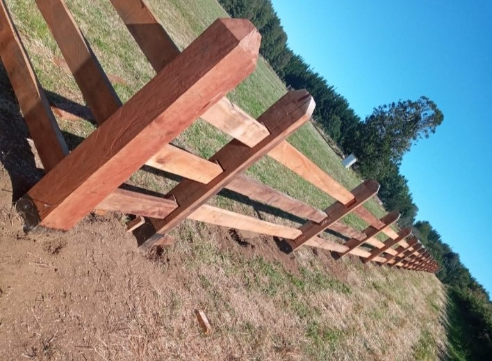
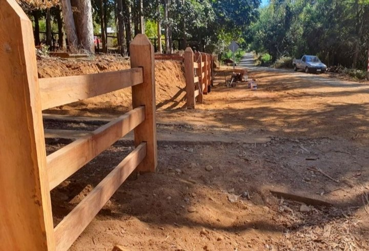
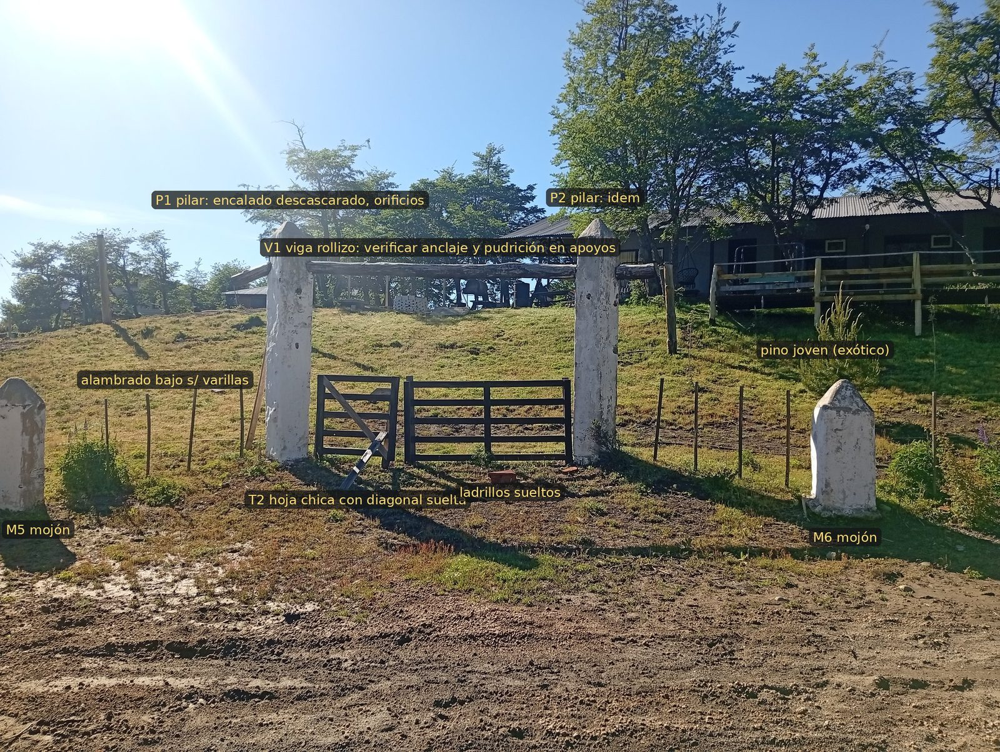
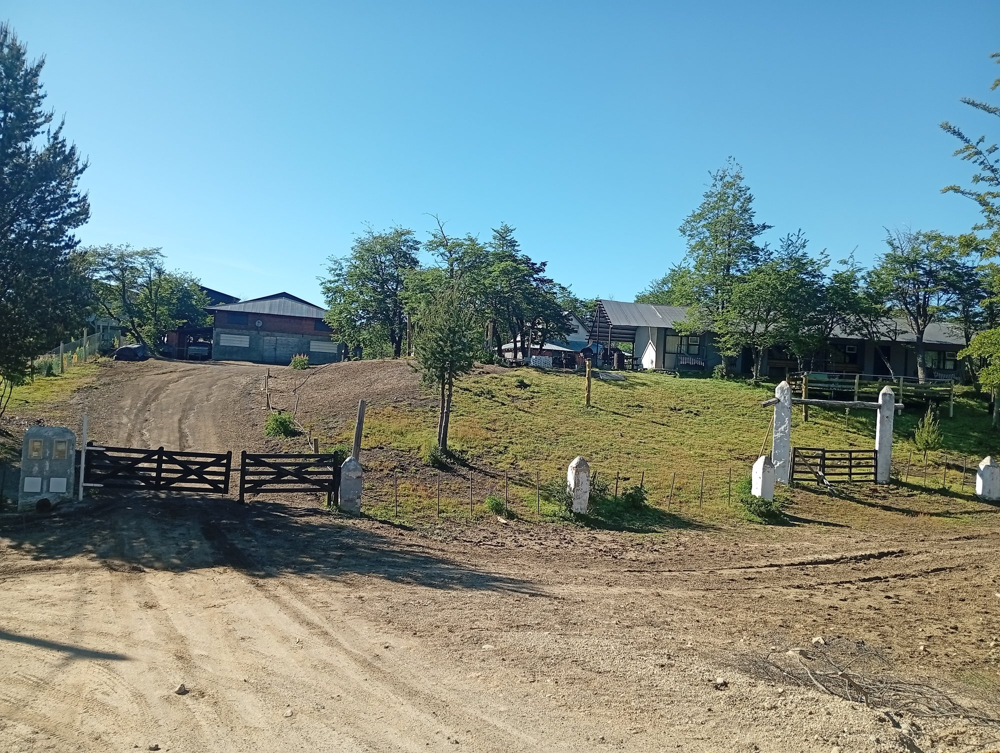
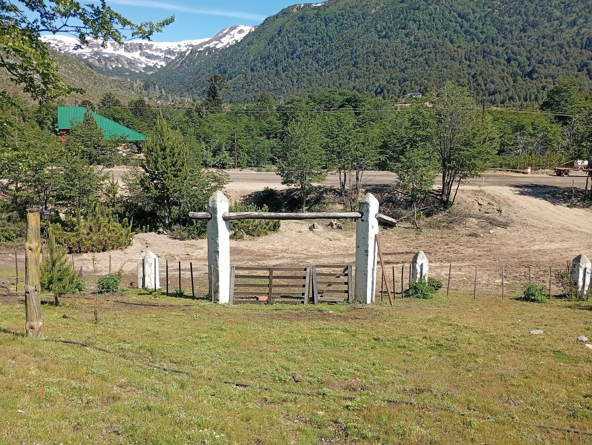
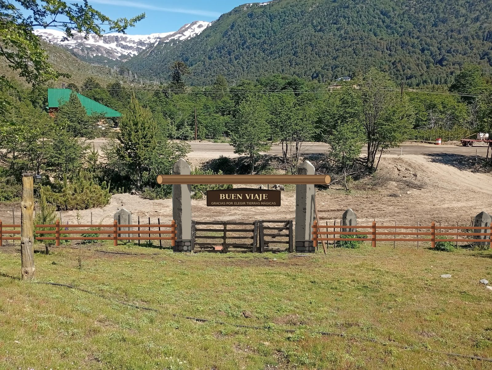
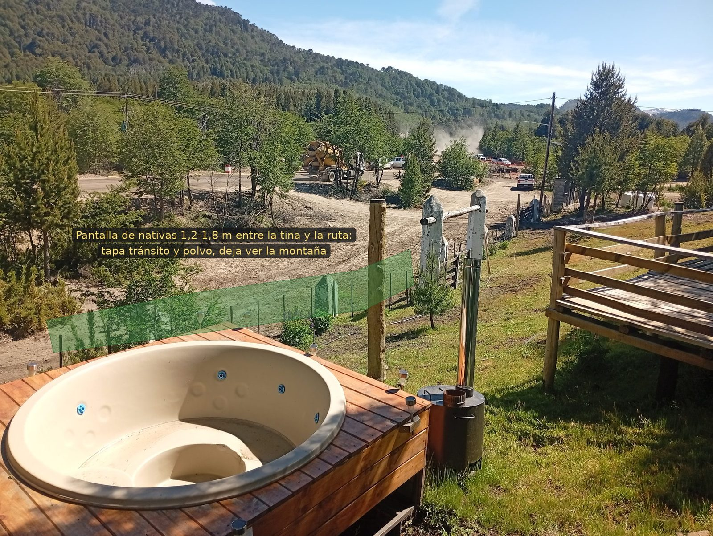
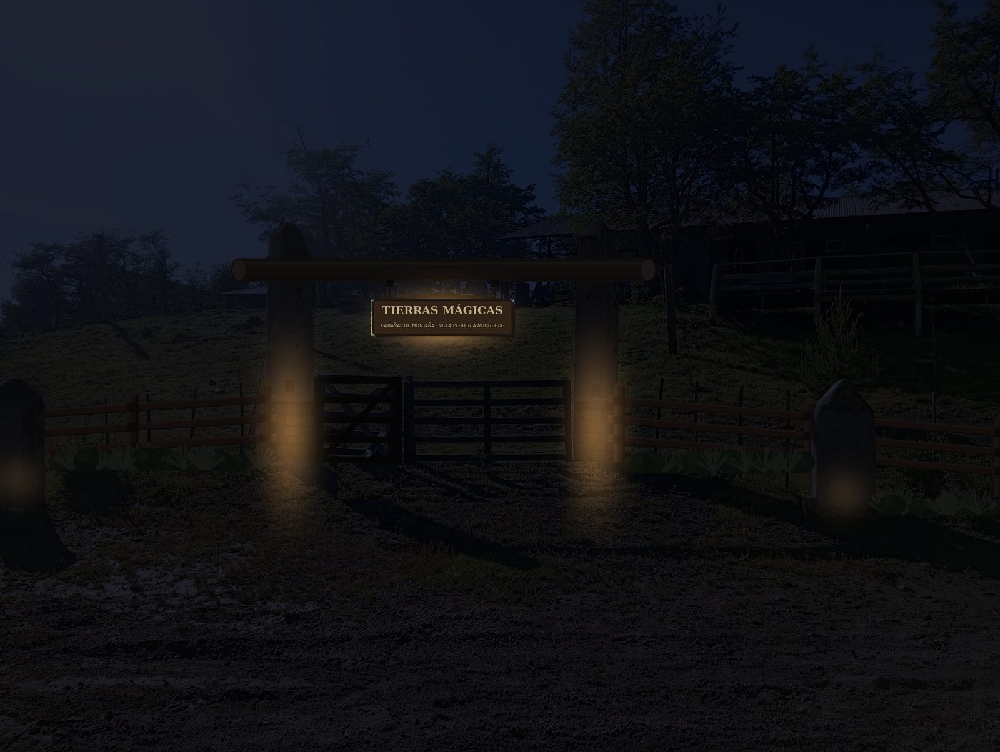

Rediseño y refacción del acceso a Tierras Mágicas
RP 11 Km 8,2, Villa Pehuenia Moquehue, Neuquén. Análisis de 23 fotos del estado actual (11 desde la ruta y 12 desde el interior y los costados), tres alternativas con reuso de lo existente, alternativa recomendada por etapas, cómputo y plan de ejecución. Las imágenes de propuesta son fotomontajes ilustrativos sobre las fotos originales, no renders fotorrealistas.
- Dirección: RP 11 Km 8,2. Ojo: el plano municipal de relevamiento rotula la ruta como «RP Nº 11 Km 11»; conviene que coincidan en la próxima presentación.
- Texto del cartel: «Tierras Mágicas · Cabañas de montaña · Villa Pehuenia Moquehue».
- Frente sobre la ruta: 59,54 m, con retiro de frente de 2,00 m (plano municipal, lámina 1/3). Lote de 3608,70 m².
- Portal: luz de 3,80 m entre pilares, retirado 1,50 m hacia adentro de la línea de cerca, con alas de 2 m medidos sobre la línea de cerca (2,5 m de ala en diagonal) hasta los mojones vecinos.
- Viga del portal: está podrida y se reemplaza en todas las alternativas.
- Pilar de medidores: se puede revestir.
- Cerca: se adopta la tipología de las fotos de referencia: postes escuadrados con punta y 3 travesaños pasantes.
- Medidas: la tranquera y el camino de acceso tienen 5,50 m de ancho. Los mojones miden 45 × 45 × 150 cm y los pilares del portal, 45 × 45 × 340 cm. El cerco de soga mide unos 50 m. Con esto, la cerca nueva del frente queda en ≈ 46,7 m.
- El portal pasa a ser el acceso peatonal: se suma un sendero desde el portal hasta las cabañas.
- Banquina: en invierno se usará como estacionamiento. No se planta ni se construye ahí; la plantación va del lado de adentro de la cerca.
- Ruta: la están asfaltando y va a quedar unos 50 cm más alta que hoy. Hay una ciclovía mencionada, pero todavía no está proyectada.
- Iluminación: se prioriza la solar. Junto a la tranquera ya hay una luminaria pública.
- Cerca: 9 mojones cada 6 m, recta. El portal tiene 3,80 m de luz y está retirado 1,50 m hacia adentro, con alas de 2 m a cada lado, medidos sobre la línea de cerca (atrio peatonal). El pilar de medidores mide 100 × 45 × 150 cm.
- Ruta: el nivel final queda 0,50 m más alto, con cuneta y alcantarilla bajo el ingreso vehicular, y el acceso empalma en forma perpendicular. Hay 20 m desde la tranquera hasta el borde del asfalto: la rampa sube 0,50 m, una pendiente del 2,5 %. La cuneta, la alcantarilla y el relleno de la banquina los hace la constructora vial.
- Variante sin paso peatonal: si la cuneta o la alcantarilla generan un problema frente al portal, se elimina el acceso peatonal por ahí (ver etapas).


HECHO se ve en las fotos · INFERENCIA deducido de lo visible · SUPUESTO valor de trabajo a confirmar · FALTA dato que hay que relevar · DECISIÓN criterio de proyecto
01Diagnóstico arquitectónico y paisajístico


Qué es cada cosa
| Sistema | Elementos | Fotos | Lectura |
|---|---|---|---|
| Acceso vehicular | Tranquera de 2 hojas desiguales con cruz de San Andrés (T1), pilar de hormigón con 2 medidores (P0), mojón como tope (M1), camino de tierra en subida hacia el galpón, cerco de soga a la izquierda | F02, F09, F10, F11 | HECHO Es el ingreso real de autos. Hoy es el menos cuidado: lo primero que ve el huésped es un pilar de medidores de hormigón gris. |
| Acceso secundario | Portal de 2 pilares blancos (P1, P2) con viga de rollizo (V1), portón peatonal de 2 hojas (T2) de madera oscura, sin camino marcado detrás | F01, F03, F07, F08 | INFERENCIA Es el elemento con más presencia del frente, pero no lleva a ningún lado: detrás hay pasto en pendiente. Funciona como portada simbólica. |
| Cerramiento frontal | Mojones blancos de punta (≈ 8, conteo a confirmar), alambrado bajo sobre varillas finas, varios rollizos sueltos clavados, manguera de goteo a la vista | todas | HECHO Tres lenguajes distintos (mojón encalado, varilla y alambre, soga) sin vínculo entre sí. |
Problemas principales
- Jerarquía invertida. El portal, que es lo más vistoso, es el acceso secundario; el ingreso real de autos no tiene identidad ni cartel. HECHO
- Los mojones blancos de punta leen como lápidas. En hilera, sobre pasto y con el encalado manchado, la imagen remite a un cementerio más que a un refugio de montaña. Es la causa principal de la mala primera impresión. INFERENCIA
- El blanco desaparece con nieve. En invierno, pilares y mojones blancos se pierden sobre la nieve y el acceso pierde identidad justo cuando más falta hace orientarse. INFERENCIA
- Terminaciones deterioradas. Encalado descascarado con el ladrillo o revoque a la vista (F11), orificios en los pilares, la hoja chica del portón con una diagonal suelta, ladrillos tirados al pie. HECHO
- Cerca de aspecto provisorio. Alambrado bajo sobre varillas finas, sin travesaños ni postes de peso visual. HECHO
- Borde de ruta indefinido. Suelo recién perfilado y desnudo entre la ruta y la cerca, con charcos y huellas: riesgo de erosión y barro. HECHO
- Especies exóticas en el frente. Pinos jóvenes plantados junto a la cerca y lupinos. Ambos se consideran invasores en la Patagonia andina y los pinos, además, crecerán hasta tapar la vista desde la ruta. INFERENCIA a confirmar con un vivero de nativas o con INTA.
A favor
- Los pilares y mojones existen, tienen escala y su punta inclinada ya descarga la nieve: sirven si cambia la terminación. HECHO
- Los portones son de madera maciza oscura, del mismo lenguaje que el refugio, y se ven reparables. INFERENCIA
- Hay bosque de ñires y lengas, riego por goteo y plantas que ya prendieron (romero, enebros, lupinos): hay base para el paisajismo.
- El frente tiene buena visual desde la ruta hacia las cabañas y el quincho: no hay que taparla.
02Inventario de elementos reutilizables
| ID | Elemento | Cant. | Estado visible | Acción propuesta | Verificar antes |
|---|---|---|---|---|---|
| P1, P2 | Pilares del portal, mampostería u hormigón revocado y encalado | 2 | Descascarado, orificios, aplomo aparente correcto | Reusar. Picar lo flojo, reparar, terminación mineral gris piedra; zócalo de piedra en A2 | Material interno, fisuras, aplomo, fundación |
| P0 | Pilar de medidores (hormigón) | 1 | Sano, gris crudo | Reusar. Zócalo de piedra bajo las cajas; nunca tapar ventanas ni accesos | Confirmado: se puede revestir |
| M1…Mn | Mojones de punta encalados | ≈ 8 | Descascarados, algunos con ladrillo a la vista | Reusar todos como ritmo de la cerca; cambiar el color | Conteo y numeración en obra; los que estén flojos se reasientan |
| V1 | Viga de rollizo del portal | 1 | Podrida (confirmado) | Reemplazar por rollizo nuevo de Ø 25-30 cm × 6 m, anclado a los pilares | Estado de la cabeza de los pilares al retirarla |
| T1 | Tranquera vehicular, 2 hojas | 2 h | Buena; pintura oscura pareja | Reusar. Lijado, herrajes, impregnante oscuro | Caída de las hojas, bisagras, cierre |
| T2 | Portón peatonal, 2 hojas | 2 h | Hoja chica con diagonal suelta | Reusar; rehacer la pieza dañada | Tablas podridas en la base |
| — | Alambrado y varillas | 43,9 m | Bajo, algo flojo | A1: retensar. A2/A3: retirar (la cerca nueva lo reemplaza) y reusar las varillas en otro sector; se mantiene detrás solo si hace falta frenar animales | Si entran animales desde la ruta |
| — | Rollizos sueltos en la ladera | 3-4 | Nuevos, naturales | Reusar como postes de la cerca de travesaños o de luminarias | Para qué se colocaron (¿proyecto previo?) |
| — | Riego por goteo | gl | En uso, a la vista | Reusar; enterrar bajo cobertura y ampliar | Caudal disponible |
| — | Plantas instaladas (romero, enebros, lupinos) | gl | Sanas | Mantener romero; mantener enebros lejos de construcciones; no ampliar lupinos | — |
| — | Diseño del cartel con logo | 1 | Existe el arte | Usar el panel del logo; no construir el pórtico nuevo del diseño (el portal existente cumple esa función) | Texto de ubicación definitivo |
03Tres alternativas
Las tres comparten la misma identidad: pilares y mojones en gris piedra cálido en lugar de blanco, madera oscura, letras en tono crema y vegetación nativa baja. Cambia la cantidad de intervención.

Alternativa 1 · Refacción económica
- Picado, reparación y pintura mineral gris piedra en pilares y mojones.
- Reparación de la hoja chica del portón; lijado e impregnante en ambos portones.
- Viga nueva de rollizo en el portal (la existente está podrida).
- Retensado y alineación del alambrado; retiro de ladrillos, ramas y piezas sueltas.
- Placa metálica oscura con el nombre en el pilar P2 y placa «Ingreso / Recepción» en la tranquera.
- Matas nativas puntuales al pie de los pilares.
- Un aplique en el pilar de medidores.
Resultado: elimina el efecto lápida y el descuido. No resuelve la jerarquía ni la cerca provisoria.

Alternativa 2 · Patagónico natural RECOMENDADA
- Todo lo de la alternativa 1.
- Zócalo de piedra local de ~0,60 m en P1, P2 y en el pilar de medidores, bajo las cajas.
- Viga nueva de rollizo de Ø 25-30 cm × 6 m, anclada a los pilares.
- Cerca de postes escuadrados de 5"×5" con punta de diamante (repite la forma de los mojones) y 3 travesaños de 2"×5" pasantes. Van 3 postes por tramo de 6 m entre mojones, y cada travesaño es de una sola pieza de 5,49 m (18'). Madera natural rojiza, ≈ 43,9 m en total.
- Tabla tallada colgada de la viga, con botaguas, y el nombre en letras crema.
- Faja de plantación nativa de 0,8 m al pie de la cerca, sobre el goteo existente y con cobertura.
- Iluminación solar cálida y dirigida hacia abajo: 2 proyectores sobre el cartel y 1 aplique por pilar, todos con panel separado. La tranquera ya tiene una luminaria pública.
- Sendero peatonal de ripio de 1,2 m desde el portal hasta las cabañas, con borde de rollizo y balizas solares bajas.
- El cerco de soga del camino interno (≈ 50 m) pasa a ser de un travesaño.
Resultado: frente unificado y legible con nieve, con los dos accesos identificados.

Alternativa 3 · Refugio de montaña premium
- Pilares del portal revestidos de piedra en toda la altura, con remate inclinado.
- Viga nueva de rollizo de Ø 25-30 cm con ménsulas metálicas negras.
- La misma cerca de postes escuadrados de la alternativa 2.
- Portón peatonal nuevo: bastidor metálico negro con tablas verticales.
- Panel con el logo existente colgado de la viga.
- Pircas bajas de piedra seca a los lados del portal; cerca de travesaños; paisajismo más denso.
- Iluminación completa, con luz rasante y baja sobre la vegetación.
Resultado: el mayor impacto, pero reemplaza el portón peatonal, que todavía sirve, y reviste los pilares completos. Solo se justifica si el portón no se recupera bien.
04Comparación
| Criterio | A1 Económica | A2 Patagónico natural | A3 Premium |
|---|---|---|---|
| Inversión relativa | Baja (≈ 1×) | Media (≈ 3 a 4×) SUPUESTO | Alta (≈ 7 a 10×) SUPUESTO |
| Reuso de lo existente | Total, salvo la viga | Total salvo la viga, con agregados | Parcial: también reemplaza el portón peatonal |
| Jornales estimados | 6-10 | 15-25 | 30-50 |
| Mano de obra propia | Casi todo | La mayoría; piedra y electricidad contratadas | Requiere pircador y herrero |
| Plazo | 1-2 semanas | 3 etapas en 5 meses | 2-3 meses de obra |
| Quita el efecto lápida | Sí | Sí | Sí |
| Identifica el ingreso vehicular | Con placa | Con placa, luz y zócalo | Sí |
| Identidad con nieve | Media | Buena | Muy buena |
| Mantenimiento | Repintar cada 3-5 años | Impregnante cada 2-3 años en la madera | Igual que A2, más el herraje |
| Riesgo de sobredimensionar | Nulo | Bajo | Medio |
Las relaciones de inversión salen de los jornales y de las cantidades del cómputo, no de precios. Se reemplazan por montos cuando lleguen las cotizaciones.
05Vistas desde la ruta y desde el interior


Desde el interior


Lo que muestran las 12 fotos del interior
| Foto | Hallazgo | Consecuencia para el proyecto |
|---|---|---|
| I01, I05, I06 | HECHO Hay obra vial en la RP 11: cartel de desvío, mixer, cisterna, máquinas y polvo. | Antes de fijar el borde exterior, consultar a Vialidad Provincial si cambia el nivel, el ancho o los desagües de la ruta. Plantar la faja exterior cuando termine la obra. |
| I02, I04 | HECHO Entre la cerca y la calzada hay una franja ancha de tierra removida, con una huella en Y que conecta con la ruta. | Hace de antesala del acceso. No se planta ni se construye ahí hasta saber si es parte del lote o zona de camino. |
| I04 | HECHO Desde adentro, el portal enmarca los picos nevados. | Es la mejor visual del frente. El cartel del lado interior queda chico y no se plantan árboles en ese eje. |
| I04, I05 | HECHO La cara interior de los portones está gris, sin pintar. | El impregnante va en las dos caras, porque desde las cabañas también se ven. |
| I01, I02 | HECHO El pilar de medidores tiene cajas en las dos caras. Del lado de adentro hay un tablero con térmicas y una caja a unos 0,30 m del suelo. | El zócalo de piedra bordea las cajas dejando 5 cm libres, o se baja a 0,35 m. Que el electricista confirme si el circuito de luces puede salir de ese tablero. |
| I02 | HECHO La tranquera vehicular tiene una hoja grande, una chica y un panel fijo contra el mojón. | Se restaura completa; no hace falta reemplazarla. |
| I01 | HECHO Las varillas del alambrado son de hierro, con óxido. | Cuando se retire el alambrado se pueden reusar en cercos internos. |
| I03, I04 | HECHO Los mojones quedan del lado de la ruta y el alambrado del lado de adentro. | La cerca nueva sigue la línea del alambrado: desde la ruta se ven los mojones por delante y desde adentro, la cerca por delante. |
| I05 | HECHO Hay 3 tanques de gas en el sector derecho, cerca del ingreso vehicular. | No se ponen luminarias, cableado ni coníferas junto a los tanques. Se respetan las distancias que fije el gasista matriculado. |
| I06 | HECHO Desde la tina se ven la ruta, el tránsito de obra y el polvo. INFERENCIA Desde la ruta también se ve a quienes usan la tina. | Pantalla vegetal de nativas de 1,2 a 1,8 m entre la tina y la cerca, por debajo de la línea de la montaña (ver imagen). |
| I08 | HECHO Junto a la tranquera hay una luminaria pública LED. El mojón de ese lado ya es gris, sin encalar. El vecino usa un pilar revestido en piedra con reja negra. | La tranquera no necesita luz propia. El gris piedra propuesto ya existe en el acceso y combina con lo que hay en la zona. |
| I09-I11 | HECHO Los pilares del portal tienen orificios y parches de reparaciones anteriores. La viga pasa por encima de los pilares y sobresale de los dos lados. | Se reparan los orificios antes de pintar. La viga nueva repite ese apoyo, con anclaje. |
| I12 | HECHO En el fogón ya hay luces solares sobre rollizos y guirnaldas. Desde ahí también se ven la ruta y los mixers de la obra. | Unificar la temperatura de color con la del acceso. La pantalla vegetal de la tina también protege la vista desde el fogón. |
| I07 | HECHO En el extremo derecho, el renoval denso de ñires ya tapa la ruta. | Se conserva tal como está; no hace falta cerca de travesaños ahí, alcanza con el alambrado. |

06Alternativa 2 en las cuatro estaciones



Los cambios de estación se simularon recoloreando la foto de verano. Los pinos aparecen recoloreados igual que los ñires aunque en la realidad no cambian de color.
07Esquema de distribución de la cerca
Según el croquis del dueño: la cerca va recta con mojones cada 6 m. En el portal, la línea se mete 1,50 m hacia adentro con dos alas que ocupan 2 m sobre la línea (2,5 m en diagonal) y forma un atrio peatonal de 3,80 m frente al portón. La tranquera de 5,50 m conecta en forma perpendicular con la ruta nueva sobre una alcantarilla.
08Detalles constructivos
09Paisajismo
Criterio: franja continua y baja del lado de adentro de la cerca, en grupos irregulares de 3 a 5 plantas de la misma especie y con piedras del lugar semienterradas. Nada supera 0,8 m en el triángulo de visibilidad de la tranquera ni tapa los pilares. En la banquina no se planta: allí se estaciona en invierno y la máquina vial acopia la nieve. A cada lado del sendero peatonal, matas bajas de coirón y chaura.
| Especie | Origen | Rol | Altura | Estación fuerte | Notas |
|---|---|---|---|---|---|
| Coirón blanco Festuca pallescens | Nativa | Gramínea base, mata | 0,3-0,5 m | Otoño-invierno pajizo | Muy rústica; bajo mantenimiento |
| Calafate Berberis microphylla | Nativa | Arbusto bajo-medio | 0,6-1,2 m | Primavera amarilla, fruto en verano | Espinoso: lejos del paso peatonal; sirve de barrera junto a la cerca |
| Michay Berberis darwinii | Nativa | Arbusto | 0,8-1,5 m | Primavera naranja | Solo fuera del triángulo de visibilidad |
| Chaura Gaultheria mucronata | Nativa | Cubresuelo arbustivo | 0,3-0,6 m | Bayas en otoño | Aguanta media sombra bajo ñires |
| Amancay Alstroemeria aurea | Nativa | Perenne de flor | 0,4-0,8 m | Verano naranja | Desaparece en invierno; reemplaza al lupino como flor de verano |
| Palo piche Fabiana imbricata | Nativa | Arbusto de acento | 0,8-1,5 m | Fin de primavera blanca | Tolera suelo pobre y seco |
| Notro Embothrium coccineum | Nativa | Acento rojo puntual | arbóreo | Primavera roja | Verificar si prospera a la altura de Moquehue; solo atrás de la cerca |
| Ñire Nothofagus antarctica | Nativa (existente) | Árbol, color otoñal | — | Otoño rojo | Conservar todos los sanos; dejar crecer los renovales del lado derecho (F05) |
| Romero, enebros | Exóticas (existentes) | Mantener | — | — | No sumar más enebros: son muy inflamables |
| Pinos jóvenes, lupino | Exóticas invasoras | No ampliar | — | — | DECISIÓN DEL DUEÑO reemplazar los pinos del frente por nativas antes de que superen 2 m |
Comprar en un vivero de nativas de la zona (Villa Pehuenia, Aluminé, Junín o Bariloche) y pedir que confirmen especie, procedencia y altura de la zona. Plantar en otoño (marzo-abril) o temprano en primavera; si se planta en verano, con goteo diario las primeras semanas. Cobertura de 5 cm de chip de corteza o grava del lugar para evitar erosión y malezas.
10Iluminación solar
Se prioriza la energía solar. En Moquehue, en invierno, hay pocas horas de sol, nubes seguidas y nieve sobre los paneles. Por eso el diseño se arma para que los equipos funcionen en junio y julio, no en enero.
- Panel separado de la luminaria. Así la luz apunta hacia abajo bajo la viga o en el pilar, y el panel queda donde le da el sol. Según el plano, el frente mira al noroeste: los paneles van sobre la viga, del lado de la ruta, con una inclinación de unos 55 a 60° para que la nieve resbale. Sin sombra de pinos y por encima de la altura de acumulación de nieve.
- Batería apta para frío. Las de litio LiFePO4 comunes no deben cargarse bajo 0 °C. Hay que pedir modelos con protección o calefacción de carga a baja temperatura, y autonomía de al menos 3 noches.
- Poca potencia y horario corto. Luz de 2700 a 3000 K, de 100 a 300 lúmenes por equipo, encendido al anochecer y bajada al 30 % después de las 00:30, o con sensor de movimiento en el sendero. Las luces solares baratas suelen ser frías (6000 K): se reemplazan las existentes que lo sean, para que todo el predio tenga la misma luz.
- Tranquera vehicular: ya hay una luminaria pública sobre la ruta. Alcanza con que la placa «Ingreso» sea clara y reflectiva.
- Sendero peatonal: balizas solares bajas cada ≈ 4 m, del lado de adentro. Ninguna en la banquina, para que no las rompan los autos ni la máquina de nieve.
- Toda la luz va hacia abajo, para no perder el cielo estrellado.
- Plan B: si en el primer invierno las luces solares del cartel no alcanzan, se pasa solo ese punto a 12 V desde el tablero interior del pilar de medidores, con electricista matriculado.
11Materiales y cómputo preliminar
Las cantidades están en la planilla computo_presupuesto_acceso.xlsx con fórmulas: se cargan las medidas reales en la hoja 1_Relevamiento y el cómputo se recalcula. Los valores de abajo usan las medidas del plano y del croquis del dueño: 9 mojones de 45 × 45 × 150 cm cada 6 m (7 tramos), alas de 2,5 m, portal de 3,80 m con pilares de 45 × 45 × 340 cm, tranquera de 5,50 m, pilar de medidores de 100 × 45 × 150 cm y cerco interno de 50 m. El sendero se toma en 30 m. La banquina, la cuneta y la alcantarilla quedan a cargo de la constructora vial y no entran en el presupuesto.
| Rubro | Ítem | Unid. | A1 | A2 | A3 | Origen |
|---|---|---|---|---|---|---|
| Pilares y mojones | Picado de partes flojas y reparación con mortero | m² | 3,7 | 3,7 | 2,4 | REUTILIZADO: trabajo de recuperación |
| Pintura mineral/silicato gris piedra (2 manos) | m² | 36,5 | 34,4 | 24,3 | NUEVO | |
| Revestimiento de piedra local (zócalo o completo) | m² | — | 3,9 | 14,6 | NUEVO / piedra del predio si hay | |
| Remate inclinado (botaguas) en pilares | u | — | — | 2 | NUEVO | |
| Portal | Retiro de la viga existente (podrida) | u | 1 | 1 | 1 | Mano de obra propia |
| Viga nueva rollizo Ø25-30 cm × 6,0 m (luz 3,80 + pilares 0,90 + 0,65 m de vuelo por lado) | u | 1 | 1 | 1 | NUEVO | |
| Anclaje de viga a pilares: varilla roscada galvanizada + resina química | jgo | 1 | 1 | 1 | NUEVO | |
| Ménsulas metálicas negras bajo la viga | u | — | — | 2 | NUEVO | |
| Portones | Restauración tranquera vehicular (lijado, herrajes, impregnante) | hoja | 2 | 2 | 2 | REUTILIZADO |
| Restauración portón peatonal (hoja chica reparada) | hoja | 2 | 2 | — | REUTILIZADO | |
| Portón peatonal nuevo bastidor metálico + madera | u | — | — | 1 | NUEVO | |
| Cerca | Retensado del alambrado (A1) o retiro y reuso de varillas en otro sector (A2/A3, si no hay animales) | m | 43,9 | 43,9 | 43,9 | REUTILIZADO |
| Postes escuadrados 5"×5" × 1,85 m (1,15 libre + 0,70 empotrado), punta de diamante | u | — | 25 | 25 | NUEVO | |
| Travesaños 2"×5" × 5,49 m (18'), una pieza por línea y tramo | u | — | 21 | 21 | NUEVO | |
| Travesaños 2"×5" × 3,05 m (10') para las alas de 2,5 m | u | — | 6 | 6 | NUEVO | |
| Cajas escopleadas en postes (3 por poste) | u | — | 75 | 75 | Mano de obra (carpintero o propia con escopladora) | |
| Impregnante para madera, superficie a cubrir | m² | — | 63,1 | 63,1 | NUEVO | |
| Tarugos de madera dura o tirafondos galvanizados (1 por cruce) | u | — | 75 | 75 | NUEVO | |
| Cerco de soga del camino interno: reemplazo por travesaño único | m | — | 50 | 50 | NUEVO; postes existentes se reusan | |
| Pirca baja de piedra seca a los lados del ingreso | m | — | — | 6 | NUEVO | |
| Señalética | Placa metálica en pilar | u | 1 | — | — | NUEVO |
| Tabla tallada colgante con botaguas | u | — | 1 | — | NUEVO | |
| Panel con el logo existente, marco y botaguas | u | — | — | 1 | NUEVO (diseño ya hecho) | |
| Placa 'Ingreso / Recepción' en tranquera vehicular | u | 1 | 1 | 1 | NUEVO | |
| Iluminación solar | Proyector solar con panel separado sobre la viga, hacia el cartel (2700-3000 K) | u | — | 2 | 2 | NUEVO |
| Aplique solar en pilar del portal, luz hacia abajo, panel separado | u | — | 2 | 2 | NUEVO | |
| Placa 'Ingreso' iluminada por la luminaria pública existente | — | — | — | — | EXISTENTE | |
| Balizas solares bajas en el sendero peatonal (cada ≈ 4 m) | u | — | 8 | 8 | NUEVO | |
| Reemplazo de luces solares existentes de luz fría por 2700-3000 K | u | — | 4 | 6 | SUPUESTO | |
| Paisajismo | Faja de plantación | m² | 10,5 | 35,1 | 52,6 | — |
| Plantas nativas (mezcla, envase 1-3 L) | u | 32 | 105 | 158 | NUEVO | |
| Pantalla vegetal entre tina y ruta: arbustos nativos 1,2-1,8 m (calafate, michay, palo piche) | u | — | 12 | 12 | NUEVO | |
| Cobertura de chip de corteza o grava local 5 cm | m³ | 0,5 | 1,8 | 2,6 | NUEVO / del predio | |
| Extensión del riego por goteo existente | m | 13,2 | 43,9 | 65,8 | REUTILIZADO + ampliación | |
| Banquina | Relleno de banquina, cuneta y alcantarilla | gl | — | — | — | SIN COSTO PROPIO |
| Sendero | Sendero peatonal portal → cabañas, 1,2 m de ancho: excavación 10 cm + ripio/grava | m² | — | 36 | 36 | NUEVO |
| Borde de rollizo o durmiente a ambos lados | m | — | 60 | 60 | NUEVO / rollizos sueltos del predio | |
| Escalones de durmiente donde la pendiente supere ≈ 10 % | u | — | 6 | 6 | SUPUESTO | |
| Limpieza | Retiro de ladrillos, ramas, piezas sueltas; perfilado de borde | gl | 1 | 1 | 1 | Mano de obra propia |
12Presupuesto comparativo
No se cargaron precios: la planilla multiplica el cómputo por el precio unitario de cada cotización, en la hoja 3_Presupuesto. Está separada en materiales reutilizados (solo mano de obra de recuperación), materiales nuevos, mano de obra propia, mano de obra contratada, herramientas y fletes, iluminación, paisajismo e imprevistos (10 %).
Qué cotizar (3 proveedores por rubro)
- Pintura mineral o al silicato para exterior en gris piedra: precio por litro y rendimiento.
- Piedra local para el zócalo (m²) y mano de obra de pircador (m² colocado).
- Postes escuadrados de 5"×5" × 1,85 m y travesaños de 2"×5" × 5,49 m (18') más 6 de 3,05 m (10') para las alas, con la punta y las cajas hechas en el aserradero si lo ofrece. Opciones de madera: ciprés de la cordillera (durable, con guía forestal), eucalipto colorado o pino impregnado CCA teñido. La base enterrada tiene que ser impregnada o de especie durable.
- Impregnante con filtro UV, herrajes y tornillería galvanizada.
- Cartel: tabla tallada con botaguas y cadenas, o panel del logo (taller de carpintería o de cartelería).
- Luminarias solares con panel separado, 2700-3000 K, IP65, con batería apta para cargar bajo 0 °C y programación horaria. Pedir la ficha técnica: autonomía en noches y temperatura mínima de carga.
- Ripio o grava para el sendero, durmientes o rollizos para el borde y los escalones.
- Plantas nativas en envase de 1 a 3 L y chip de corteza.
Quién ejecuta
| Trabajo | Propio | Profesional |
|---|---|---|
| Limpieza, retiro de ladrillos y ramas, perfilado del borde | Sí | — |
| Lijado e impregnante de portones; reparación de la hoja chica | Sí | — |
| Picado y pintura de pilares y mojones | Sí | — |
| Postes y travesaños de la cerca | Sí, con ayudante, si las cajas vienen hechas | Carpintero si hay que escoplear en obra |
| Plantación y ampliación del goteo | Sí | Consulta al vivero |
| Zócalo de piedra y pircas | No recomendado | Albañil o pircador |
| Viga nueva, anclaje y colgado del cartel | Montaje con ayuda (pesa ≈ 200-300 kg) | Verificación de arquitecto o ingeniero |
| Montaje de luces solares y del sendero | Sí | — |
| Instalación eléctrica (solo si el cartel pasa a 12 V) | — | Electricista matriculado |
| Cualquier trabajo en el pilar de medidores | — | Consulta previa a la distribuidora |
13Plan de ejecución por etapas (alternativa 2)
- Etapa 0 · Relevamiento y decisión (diciembre, 1 semana). Ya están el frente, la luz del portal, el estado de la viga, el pilar de medidores, la dirección, el texto del cartel y las fotos del interior. Ya están también las medidas del croquis y la definición de la obra vial: la cuneta, la alcantarilla y la banquina las hace la constructora. Falta: replantear el sendero, encargar la viga y la madera de la cerca; pedir cotizaciones. GATE Seguir con las cotizaciones.
- Etapa 1 · Imagen para la temporada alta (diciembre, antes de enero). Equivale a la alternativa 1: limpieza, reparación y pintura gris piedra (antes, una muestra de 50 × 50 cm en un mojón), portones, viga nueva (por seguridad no conviene esperar: una viga podrida sobre un paso puede caer) y placa de ingreso vehicular. Mano de obra propia. Quita el efecto lápida desde el primer huésped de enero.
- Etapa 2 · Cerca, cartel y sendero (febrero-marzo). Cerca de postes escuadrados con retiro del alambrado, tabla colgada de la viga nueva, sendero peatonal con balizas, travesaño en el camino interno (≈ 50 m) y luces solares del portal.
- Etapa 3 · Piedra, luz y plantas (marzo-abril, antes de las heladas). Incluye la pantalla vegetal de la tina. Zócalos de piedra con temperatura favorable para el mortero, plantación de otoño del lado de adentro con cobertura y goteo.
- Decisión antes de la etapa 2: cuando la constructora marque la cuneta frente al portal, confirmar si el paso peatonal sigue. Si no sigue (variante B), se descuentan el sendero, las 8 balizas y los escalones, y el portón del portal se fija cerrado. El portal, el cartel y las luces quedan igual.
- Etapa 4 · Opcional (siguiente temporada). Elementos de la alternativa 3 que hagan falta según el resultado, por ejemplo el portón peatonal nuevo si el existente no se recupera bien.
14Riesgos, supuestos y datos que faltan
| Tipo | Descripción | Mitigación |
|---|---|---|
| FALTA | Cantidad exacta de mojones y recorrido del sendero | Etapa 0; la planilla se recalcula sola |
| FALTA | Estado de la cabeza de los pilares donde apoyaba la viga podrida | Revisar al desmontar; reparar antes de apoyar la viga nueva |
| Riesgo | Con el asfalto la ruta queda unos 50 cm más alta: el agua de lluvia y de deshielo puede escurrir hacia la banquina y el frente del lote | La constructora vial hace la cuneta, la alcantarilla bajo el acceso y el relleno de la banquina. Verificar al terminar la obra que la banquina tenga pendiente hacia la cuneta y que el agua no vaya hacia el portal ni hacia la tranquera |
| Riesgo | Si la cuneta queda entre la calzada y la banquina, los autos solo pueden entrar a la banquina por el acceso de la alcantarilla | Prever el estacionamiento con entrada desde el acceso vehicular, a los costados, sin cruzar la cuneta. Pedir a la constructora el diámetro y la ubicación de la alcantarilla |
| Riesgo | Que la nieve acumulada tape la boca de la alcantarilla y el agua de deshielo corra por el acceso | No acopiar nieve frente a las bocas; limpiarlas antes del invierno |
| Dato | La rampa entre la tranquera y la ruta sube 0,50 m en 20 m | 2,5 % de pendiente, cómoda incluso con nieve. La resuelve la constructora vial junto con la alcantarilla |
| Riesgo | La cuneta o la alcantarilla frente al portal impiden el paso peatonal | Variante B: el portal queda cerrado como portada, sin sendero ni balizas, y se entra a pie por la tranquera, por un lateral marcado de 1 m |
| Riesgo | Ciclovía futura junto a la ruta | No construir nada fijo en la banquina; la cerca y la plantación quedan sobre la línea municipal o adentro |
| Riesgo | En pleno invierno las luces solares no cargan lo suficiente | Panel separado, inclinado y sin sombra, batería apta para frío y potencia baja; si no alcanza, pasar a 12 V solo el cartel |
| SUPUESTO | Que los pilares sean de mampostería revocada (por el ladrillo a la vista en F11) | Confirmar picando un sector |
| SUPUESTO | Que los postes del alambrado sean varillas finas de madera o hierro | Ver en obra; los torcidos se reemplazan |
| Riesgo | El color gris piedra puede verse frío o demasiado oscuro en el lugar | Muestra en un mojón, mirada a distintas horas antes de pintar todo |
| Riesgo | La máquina vial golpea mojones y plantas del borde al despejar nieve | Banquina libre de 1-1,5 m; nada nuevo en esa franja |
| Riesgo | Cartel con viento: golpea o se suelta | Dos puntos fijos abajo, botaguas y verificación de la viga |
| Riesgo | Incendio de interfase en el bosque | No sumar coníferas ni enebros junto al portal; vegetación baja y regada |
| Riesgo | Plantas que no prenden por helada o por la fecha de plantación | Plantar en otoño, de vivero local, con cobertura |